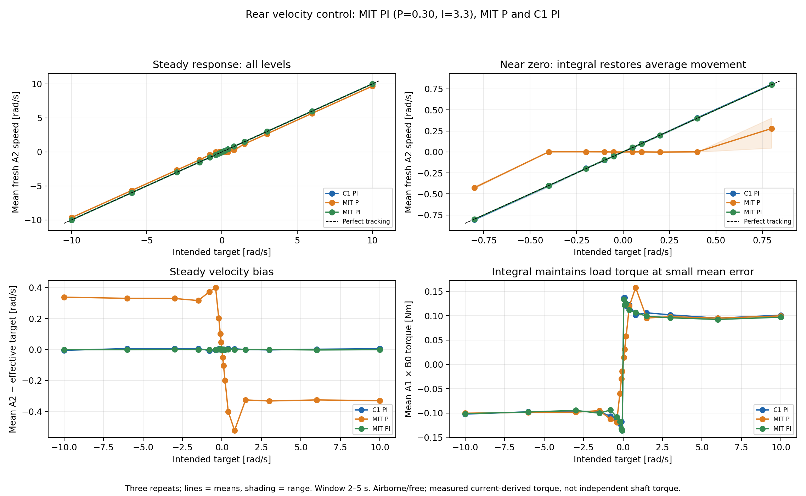
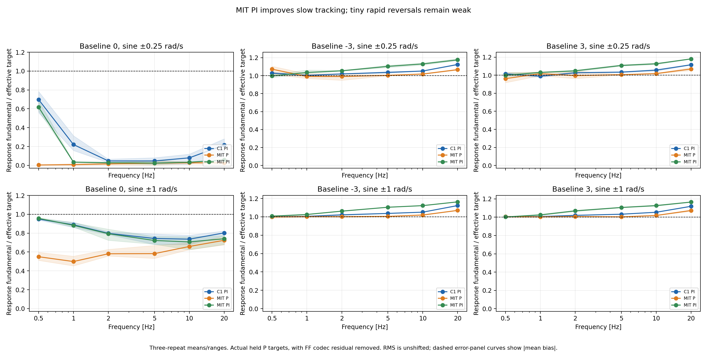
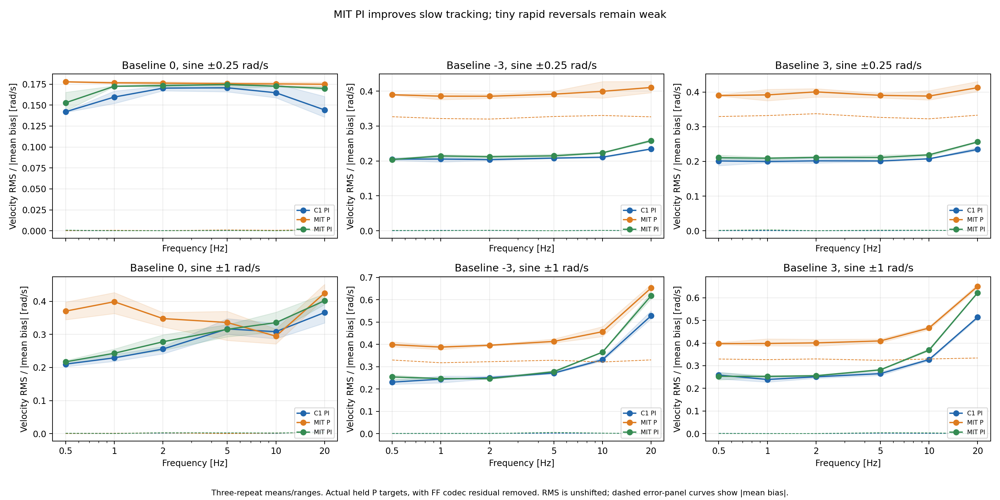
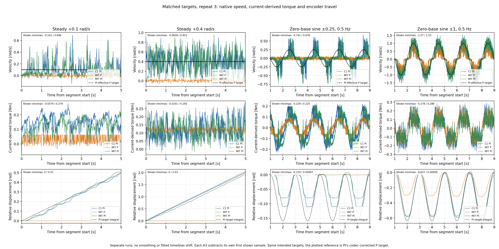
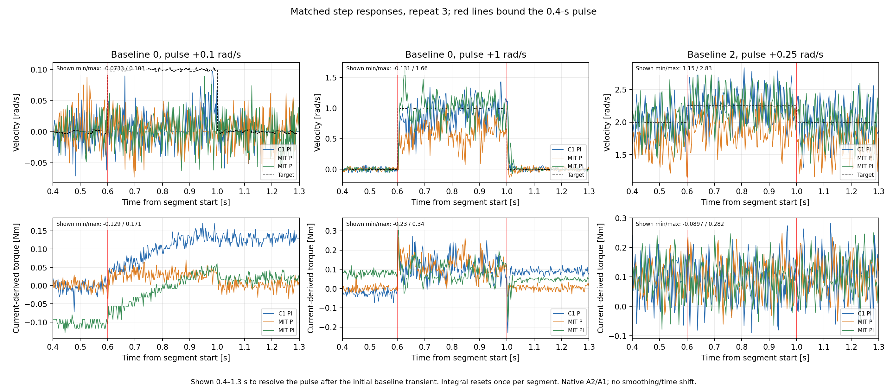
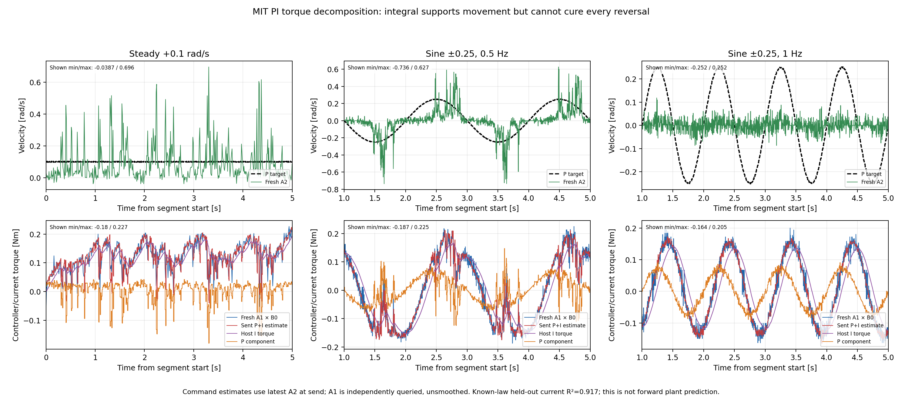

Rear MIT PI versus P-only and C1
Host integral restores steady tracking. Tiny rapid reversals remain weak.
Report · Six-page PDF ·
Steady table · Sine table ·
Raw audit · Current-law check
Integral removes the P-only average-speed deficit.

SVG · PDF
Sine amplitude across all matched conditions

SVG · PDF
Sine error including residual bias

SVG · PDF
Matched near-zero and sine responses, with encoder travel

SVG · PDF
Small and larger velocity steps

SVG · PDF
P and host I contributions compared with current telemetry

SVG · PDF